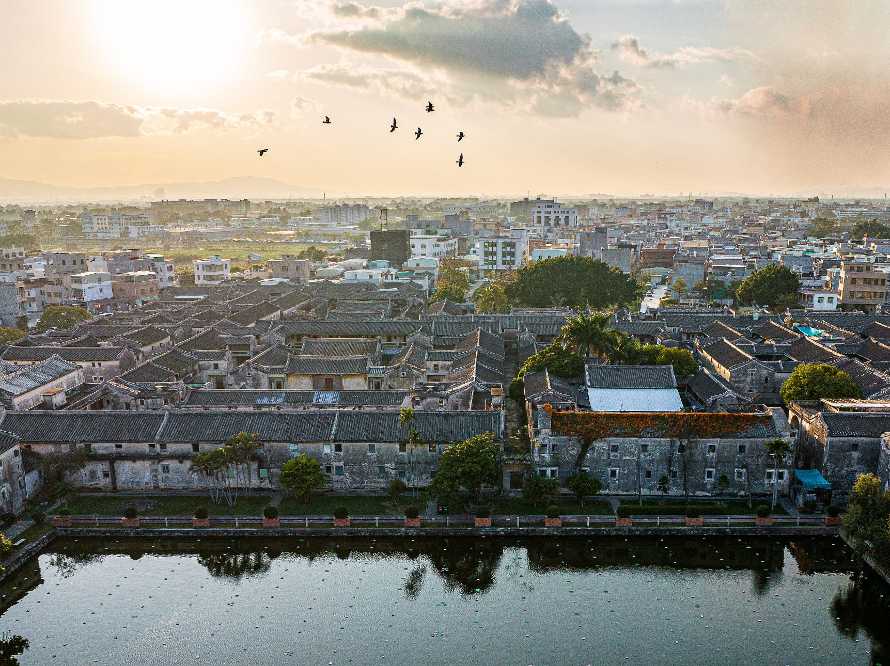
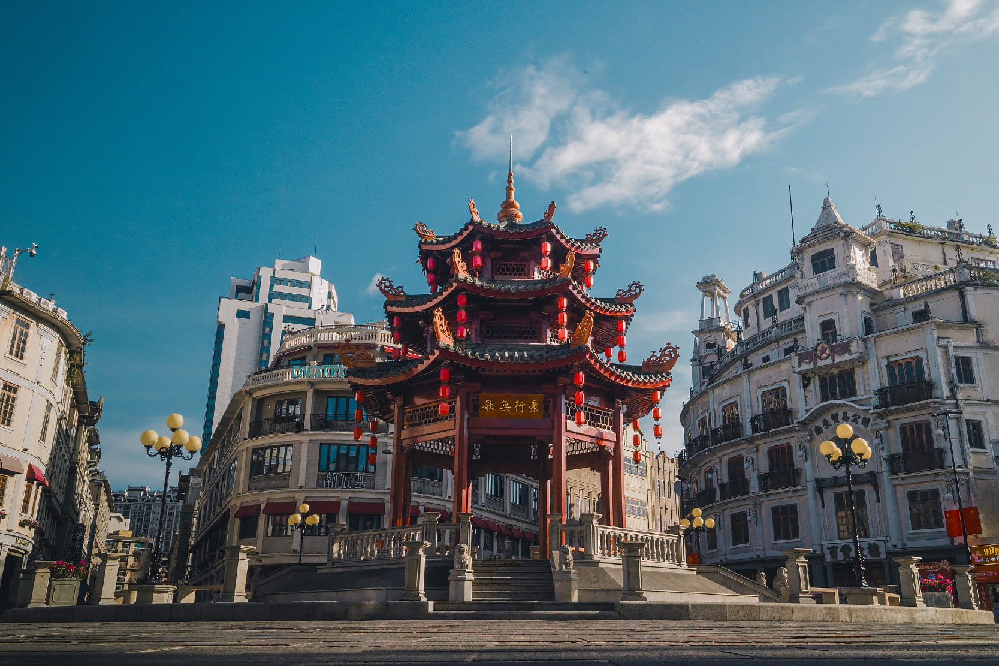
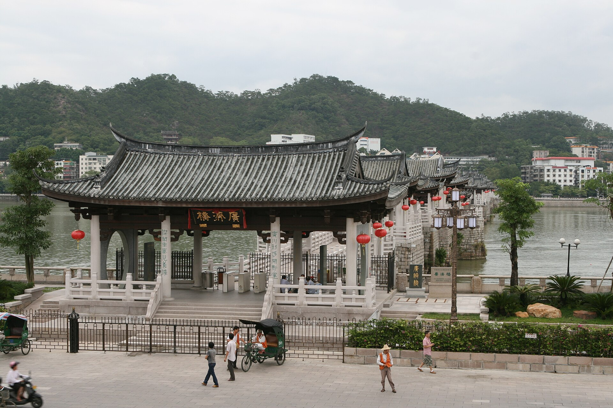
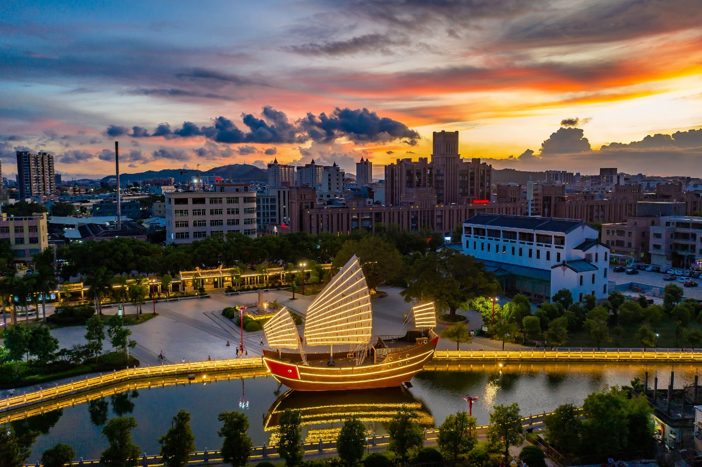
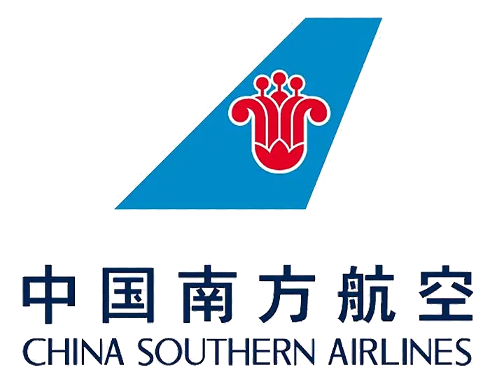
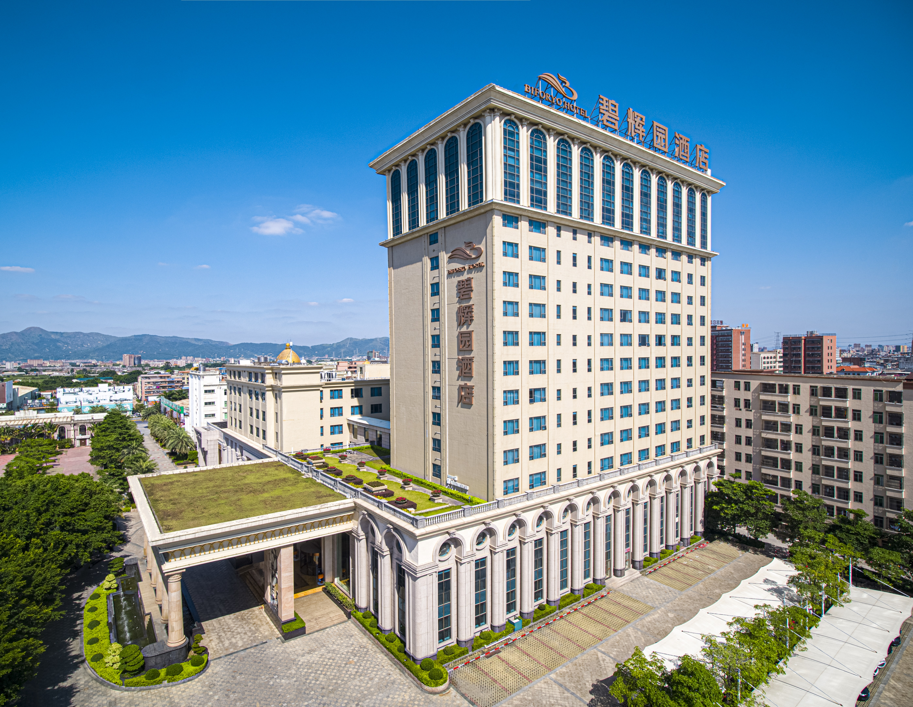
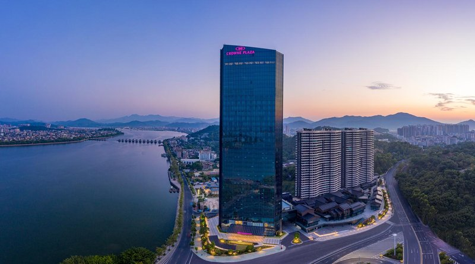

天气与衣着
潮汕九月炎热潮湿，偶有阵雨。建议穿透气衣物、舒适步行鞋，并随身带伞。
PENG FAMILY HOMECOMING · 2026
从槟城出发，走进揭阳、普宁、汕头、南澳与潮州。九日家族团聚之旅，一路寻根，也一路看见潮汕。
南澳岛 · 长山尾灯塔
这趟旅程
祭祖与探亲是旅程的主轴，也把潮汕的古厝、骑楼、海岛和工夫茶，串成一段属于彭氏家族的共同记忆。



精简行程
保留祭祖、探亲与代表性景点；实际顺序以当地接待安排为准。
槟城启程，经广州转机抵达揭阳；接机后探亲，如时间允许漫步西马路老街。
回乡祭祖、亲族相聚。闲时可游德安里，感受潮汕古村与宗族文化。
走进棉湖古镇、陈慈黉故居、老妈宫与小公园骑楼，品尝卤鹅与潮汕风味。
长山尾灯塔、青澳湾、北回归线纪念塔；乘船看七彩蚝田，现蒸生蚝。
漫游广济桥、牌坊街，工夫茶配潮剧；翌日经广州转机，平安返抵槟城。

“一条路，走向祖辈来处；一桌饭，坐回家人之间。”
出发前记住
9月10日 16:00 于槟城国际机场集合，请预留充足时间办理手续。

全程经济舱 · 广州中转精选住宿


GENERAL INFORMATION
轻装、留意证件与航空规定，旅途会更从容。
潮汕九月炎热潮湿，偶有阵雨。建议穿透气衣物、舒适步行鞋，并随身带伞。
当地使用人民币。支付宝与微信支付普及，建议同时准备少量现金。
中国电压为 220V，插座类型不一，建议携带万能转换插头。
团期资料为每人托运 23kg × 1、手提 7kg × 1；最终以个人机票显示为准。
只可随身携带，不可托运。中国境内航班须有清晰 3C 标识，勿带召回型号。
护照、常用药、充电线与紧急联络资料请放随身包；贵重物品自行保管。
TRAVEL AGENCY
HWA YIK TOUR & TRAVEL (PG) SDN. BHD.
15, Jalan Sungai Ujong
10100 Penang, Malaysia
+604-262 2333 · 票务及旅游
+604-262 0064 · 中国签证
info@hwayiktravel.com